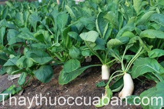

Tên khác
Tên dân gian: Cải củ, Rau lú bú, bặc căn
Tên khoa học: - Raphanus sativus L., var. longipinnatus Bail.
Họ khoa học: thuộc họ Cải - Brassicaceae.
Cây cải củ
(Mô tả, hình ảnh cây cải củ, thu hái, chế biến, thành phần hoá học, tác dụng dược lý ....)

Mô tả:
Cải củ là cây rau quen thuộc cũng là một cây thuốc quý. Dạng cây thảo sống hằng năm, có rễ củ trắng, có vị nồng cay, dài đến 40 cm (có thể đến 1m), dạng trụ tròn dài, chuỳ tròn hay cầu tròn. Lá chụm ở đất, có khía sâu gần đến gân chính. Chùm đứng; hoa trắng hay đỏ; 6 nhị; 4 dài, 2 ngắn. Quả cải hình trụ có mỏ dài, hơi eo giữa các hạt; hạt hình tròn dẹt, có một lưng khum, mặt bụng tạo nên 1 cạnh lồi ở giữa, dài 2,5-4mm, rộng 2-3mm, màu nâu đỏ hoặc màu đen.
Bộ phận dùng:
Rễ củ, lá và hạt – Radix, Folium et Semen Raphani; Người ta thường gọi Củ cải là Bặc căn; và hạt là Lai phục tử, La bặc tử.
Nơi sống và thu hái:
Cải củ đã được trồng từ thời thượng cổ ở Trung Quốc và ở Ai Cập. Do sự trồng trọt mà người ta đã tạo ra những dạng và giống trồng khác nhau.
Ta thường trồng nhiều giống; giống sớm (40-50 ngày) như giống tứ thời; giống vừa (3 tháng) như giống Tứ Liên, Quất Lâm, Thái Lan, số 8, số 9 VCTL và giống muộn (120-150 ngày) như các giống Hải Ninh, Trường Giang (Trung Quốc).
Cải củ yêu cầu khí hậu mát vừa có thể sinh trưởng ở nhiệt độ 15-28oC, tốt nhất 17-18oC. Thời kỳ ra củ cần nhiệt độ hơi thấp (ngày ấm đêm mát). Lúc ra hoa, kết quả, chịu ẩm hơn các loại cải khác nhưng không chịu được nắng hạn kéo dài với nhiệt độ trên 32oC. Ở miền Bắc Việt Nam, thường gieo vào tháng 8-10 gieo muộn không có củ. Năng suất trung bình của cải củ là 25-30 tấn/ha, có thể đạt 40-50 tấn/ha và hơn nữa tuỳ theo giống trồng, chịu nóng, lớn nhanh. Ở Đà Lạt có trồng cải Radi - Raphanus, sativus L. var. radicula Pers. có rễ củ thường tròn, to 2-3cm, thường có màu đỏ; lá xẻ ra hay không, chụm ở gốc, chùm hoa đứng mang nhiều hoa đỏ tím, ít khi trắng có sọc đậm.
Thành phần hóa học:
Củ cải trắng chứa 92% nước, 1,5% protid, 3,7% glucid, 1,8 celluloz. Trong lá tươi có 83,8% nước, 2,3%protid, 0,1% lipid, 1,6% cellulose và 7,4% dẫn xuất không protein. Củ tươi chứa glucose, pentosan, adenin, arginin, histidin, cholin, trigonellin, diastase, glucosidase, oxydase, catalase, vitamin A, B, C; còn có allyl isothiocynat, oxalic acid. Lá và ngọn chứa tinh dầu và một lượng đáng kể vitamin A và C. Hạt chứa 30-40% dầu béo mà thành phần chủ yếu là hợp chất sulfur; còn có raphanin là một chất kháng khuẩn đối với nhiều loại vi khuẩn. Rễ chứa glucosid enzym và Methyl mercapten.
Tác dụng dược lý
Củ, lá, hoa và hạt cây cải củ có hoạt tính kháng khuẩn đối với những vi khuẩn gram dương. Trong thử nghiệm về tác dụng lợi niệu trên chuột cống trắng, liều của củ cải khô 1g/kg cho chuột uống dưới dạng cao nước có tác dụng làm tăng hiệu suất tiết niệu 164%, trong khi hiệu suất tiết niệu tăng 36% ở nhóm chuột uống placebo, và tăng 286% ở nhóm uống 25mg/kg hydroclorothiazid. Trong thử nghiệm trên chó, nước ép cải củ làm tăng bài niệu và tăng tiết mật.
Những chế phẩm từ cây cải củ làm tăng sự dung nạp của cơ thể đối với carbon hydrat.
Vị thuốc của cải
(Công dụng, liều dùng, quy kinh, tính vị...)
Tính vị:
Củ cải có vị ngọt, hơi cay, đắng, tính bình, không độc
Hạt có vị cay ngọt, mùi thơm, tính bình
Lá Củ cải cũng có vị cay, đắng, tính bình
Quy kinh:
Vào kinh tỳ vị, phế
Tác dụng:
Củ cải làm long đờm, trừ viêm, tiêu tích, lợi tiểu, tiêu ứ huyết, tán phong tà, trừ lỵ. Nó giúp khai vị, làm ăn ngon miệng, chống hoại huyết, chống còi xương, sát khuẩn nói chung, lọc gan và thận. Củ khô cũng làm long đờm.
Lá có tác dụng thông khí, tiêu đờm, trừ hen suyễn, lợi tiểu, nhuận tràng, tiêu tích.
Hạt có tác dụng tiêu tích, làm long đờm.
Nhựa lá tươi lợi tiểu, nhuận tràng.
Công dụng, chỉ định và phối hợp:
Cải củ được trồng lấy lá non luộc ăn, lá già muối dưa và để lấy củ. Củ cải là loại thực phẩm tương đối dễ sử dụng. Có thể dùng chế biến nhiều món ăn như luộc, kho với thịt, với cá, xào mỡ, xào thịt, nấu canh hoặc làm gỏi với tép, thịt lợn nạc; còn dùng muối dưa ăn xổi, làm dưa ăn quanh năm (ngâm trong nước mắm), làm củ cải muối, phơi khô dự trữ để làm dưa góp khi cần. Trong y học dân tộc, củ cải được dùng trong trường hợp ăn uống không ngon miệng, dùng trị bệnh hoại huyết, còi xương, thiếu khoáng, lên men trong ruột, đau gan mạn tính, vàng da, sỏi mật, viêm khớp, Thấp khớp và các bệnh về đường hô hấp (ho, hen). Đông y cũng dùng củ cải chữa bệnh lỵ, giải độc và dùng ngoài đắp trị bỏng. Hạt dùng chữa chứng phong đờm, thở suyễn, lỵ, mụn nhọt, đại tiểu tiện không thông, lại phá được trệ khí. Lá dùng chữa khản tiếng, chữa xuất huyết ở ruột, khái huyết và còn dùng chữa suyễn cho người già.
Ứng dụng lâm sàng của vị thuốc củ cải
Chữa bỏng:
Dùng củ Cải giã nát đắp.
Chữa cảm phong:
Dùng 2 thìa xúp nước củ cải đổ vào 750ml nước, thêm 2 thìa tương đậu nành, nằm trên giường mà uống, mồi hôi toát ra sẽ hết sốt.
Chữa chứng phù nề:
Nạo củ cải ép lấy nước, bỏ vào 2 phần nước và ít muối, nấu sôi một lúc, mỗi ngày uống 1 lần; không nên dùng quá 3 ngày. Hoặc lấy 40 hạt củ cải sắc uống sẽ tiêu nước, xẹp đi rất nhanh.
Bị nhiễm khói than chết ngất:
Dùng củ hay lá Cải củ giã nhỏ, vắt lấy nước cốt đổ cho uống thì tỉnh.
Tiêu ung nhọt:
Hạt Cải củ giã nhỏ, hoà giấm bôi lên.
Chữa ho nhiều đờm, suyễn, khó thở, tức ngực:
Dùng củ cải (La bặc tử) hạt Tía tô (Tô tử) 10g, hạt Cải (Bạch giới tử) 3g, các vị sao tán nhỏ, cho vào túi vải, thêm 300ml nước, sắc còn 100ml, chia 3 lần uống trong ngày
Chữa ho:
Củ cải trắng 1kg, quả lê 1kg, gừng tươi 250g, sữa 250g, mật ong 250g. Cách làm: lê gọt vỏ, bỏ hạt; củ cải, gừng tươi rửa sạch thái nhỏ. Cho từng loại vào miếng vải thô sạch để vắt nước, xong để riêng. Đổ nước củ cải, nước lê vào nồi, nấu đến sôi thì bớt lửa lại, nấu tiếp cho đến khi đặc dính thì cho nước gừng, sữa, mật ong vào quấy đều và đun sôi lại. Khi nguội cho vào lọ đậy kín dùng dần, mỗi lần một thìa canh pha vào nước nóng để uống, ngày 2 lần.
Chữa viêm họng:
Củ cải tươi (1 - 2 củ), một ít đường phèn (hoặc thay bằng mật ong). Cách làm: củ cải cạo vỏ, rửa sạch, cắt dạng sợi, đem trộn với đường phèn, cho vào hũ để qua đêm cho ra nước rồi chắt lấy nước này uống. Cứ khi nước ra, lại chắt lấy nước, làm liên tục vài ngày.
Chữa người già bị viêm phế quản mạn tính:
Hạt cải củ sao 12g, hạt tía tô 12g. Sắc uống trong ngày. Hay lấy củ cải hầm bì sứa: bì sứa 120g, củ cải 60g. Thêm nước và gia vị, hầm nhừ chia ăn 2 lần trong ngày.
Chữa viêm phế quản mạn tính, ho nhiều đờm:
Hạt cải củ sao 12g, hạnh nhân 12g, cam thảo sống 8g. Sắc uống.
Dùng cho trường hợp khản giọng, mất tiếng, nôn ói, loét miệng:
Củ cải, gừng tươi liều lượng tùy ý, ép lấy nước chia ra cho uống rải rác ít một trong ngày để ngậm và nuốt từ từ. Có thể trộn cùng nước giá đậu xanh cũng rất hay.
Chữa các trường hợp suy nhược, viêm khí phế quản, ho suyễn:
Dùng món canh thịt dê, cá diếc, củ cải. Cụ thể thịt dê 100g, cá diếc 1 con, củ cải 60g. Thêm nước và gia vị nấu canh lẩu, ăn nóng.
Chữa các trường hợp hen suyễn, viêm khí phế quản mạn tính, cảm sốt ho nhiều đờm dùng nước ép củ cải hấp đường phèn:
Củ cải tươi (hoặc luộc chín) 500g. Ép lấy nước, thêm đường phèn lượng thích hợp cho uống, ngày 1 lần.
Chữa tiêu hóa kém, mồm hôi, bụng trướng, đại tiện khô:
Hạt cải củ sao 12g, chỉ xác 8g, thần khúc sao sém 16g. Sắc kỹ uống trong ngày.
Chữa lỵ đau mót đại tiện:
Hạt cải củ 12g, tỏi 1 củ. Hạt cải củ nghiền thành bột, tỏi củ giã nát ép lấy nước. Uống bột thuốc và nước tỏi với nước đun sôi còn nóng.
Chữa trường hợp đầy bụng không tiêu do ăn uống quá nhiều các loại bánh kẹo, đường, mỡ làm món cháo củ cải:
Gạo tẻ 100g, củ cải 50g. Củ cải thái lát cùng gạo nấu cháo, thêm chút muối cho ăn.
Chữa các trường hợp đại tiện xuất huyết rỉ rả liên quan đến trĩ và uống rượu dùng món củ cải hầm nước gừng:
Củ cải (cả lá và cuống) 20 củ. Rửa sạch thái lát nấu nhừ, thêm mấy lát gừng, bột gạo, ít dấm, đun sôi để vừa nguội cho ăn.
Dùng cho người lao phổi, giãn phế quản:
Củ cải trắng hoặc xanh 1kg, thịt dê (hoặc cừu) 500g, hành, gừng tươi, rượu trắng, gia vị. Cách làm: thịt dê bóc màng lọc gân, rửa sạch, cắt miếng nhỏ rồi đem trụng nước sôi, vớt ra rửa sạch để ráo nước, rồi ướp hành, gừng, rượu trắng và cho vào nồi với lượng nước vừa dùng, nấu sôi. Củ cải cạo vỏ rửa sạch, cắt miếng nhỏ, trụng nước sôi vớt ra, cho vào nồi nấu thịt dê đang sôi, nấu cho chín mềm, nêm nếm gia vị.
Trị đau do sỏi mật:
Củ cải tươi đem thái thành từng miếng dày, rồi đem tẩm cho thấm mật ong. Sau khi tẩm, đem sấy khô, dùng củ cải đã tẩm sấy này.
Đái tháo đường:
Củ cải 200g, gạo tẻ 50g và một ít nếp đem nấu cháo. Dùng lúc cháo nóng, ngày 2 lần.
Tham khảo
Kiêng kỵ:
Hạt cải củ có thể hao tổn khí (sức lực) nên người sức yếu (khí hư) không bị đầy tích, đờm trệ đọng thì cấm uống. Người tỳ vị hư hàn nên hạn chế dùng củ cải.
Lưu ý:
Củ cải có thể dùng dạng tươi hoặc dạng khô. Củ cải tươi và củ cải khô có bán ở các siêu thị, và chợ. Khách hàng có thể tìm mua tại địa phương.
Hạt củ cải (la bạc tử) là vị thuốc nam được được dùng phổ biến trong YHCT.
Tag: cay cai cu , vi thuoc cai cu , cong dung cai cu , Hinh anh cay cai cu , Tac dung cai cu , Thuoc nam
Thaythuoccuaban.com Tổng hợp
*************************